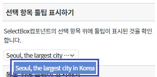
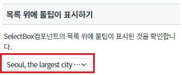
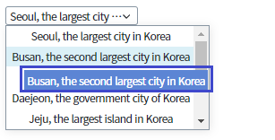
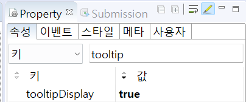
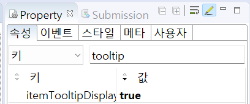
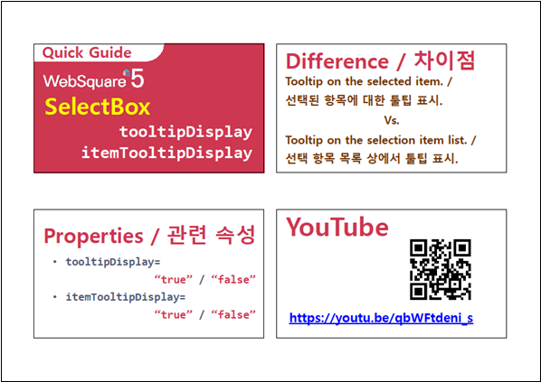

SelectBox 컴포넌트의 선택 목록 위에서 마우스 스크롤링 시 선택 목록 이 스크롤되는 것을 방지하는 예제입니다. 이 기능은 아래의 속성으로 사용할 수 있습니다. - tooltipDisplay : 사용자가 선택한 값에 대한 툴팁 표시 여부. - itemTooltipDisplay : 아이템 목록에 대한 툴팁 표시 여부.
선택 항목 툴팁 표시하기
목록 위에 툴팁 표시하기
아래 그림과 같이 SelectBox컴포넌트에 마우스를 올리고 툴팁을 확인합니다.
[브라우저(Chrome) 실행 예시]

아래 그림과 같이 SelectBox컴포넌트를 클릭합니다.
[브라우저(Chrome) 실행 예시]

아래 그림과 같이 SelectBox컴포넌트의 목록 위에 마우스를 올리고 툴팁을 확인합니다.
[브라우저(Chrome) 실행 예시]

STEP1. SelectBox의 속성을 정의합니다.
[필수] tooltipDisplay //사용자가 선택한 값에 대한 툴팁 표시 여부. //[default: false, true]
그림 1.웹스퀘어5 SP5 스튜디오의 Property View(속성창) 예시

<!-- selectBox 의 소스 본문 예시 --> <xf:select1 tooltipDisplay="true" id="sbx_exam1"> <xf:choices> <xf:itemset nodeset="data:dlt_dataList1"> <xf:label ref="name"></xf:label> <xf:value ref="Code"></xf:value> </xf:itemset> </xf:choices> </xf:select1>
STEP1. SelectBox의 속성을 정의합니다.
[필수] itemTooltipDisplay //아이템 목록에 대한 툴팁 표시 여부. //[default: false, true]
그림 2.웹스퀘어5 SP5 스튜디오의 Property View(속성창) 예시

<!-- selectBox 의 소스 본문 예시 --> <xf:select1 itemTooltipDisplay="true" id="sbx_exam1"> <xf:choices> <xf:itemset nodeset="data:dlt_dataList1"> <xf:label ref="name"></xf:label> <xf:value ref="Code"></xf:value> </xf:itemset> </xf:choices> </xf:select1>
tooltipDisplay
itemTooltipDisplay
[웹스퀘어5 SP5 개발 가이드] SelectBox
링크 : https://docs1.inswave.com/sp5_user_guide/8df43d1f59fab704#641326163f434b17
[웹스퀘어5 SP5 개발 가이드] SelectBox 선택된 항목에 대한 툴팁 표시
링크 : https://docs1.inswave.com/sp5_user_guide/8df43d1f59fab704#a3cc4db405fa8cf4
SelectBox 선택된 항목에 대한 툴팁 표시
링크 : https://youtu.be/qbWFtdeni_s
